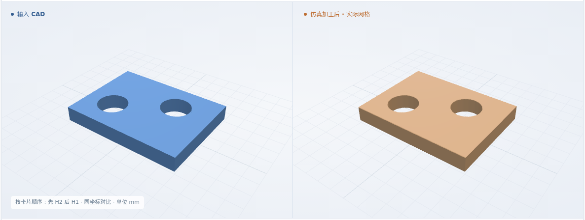
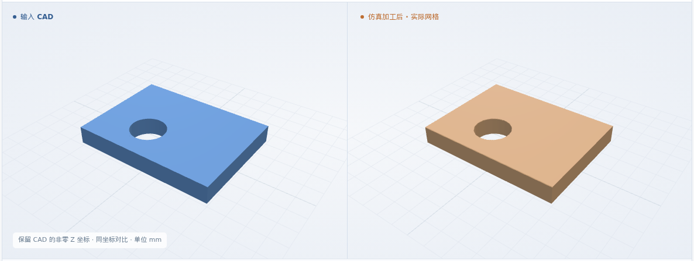
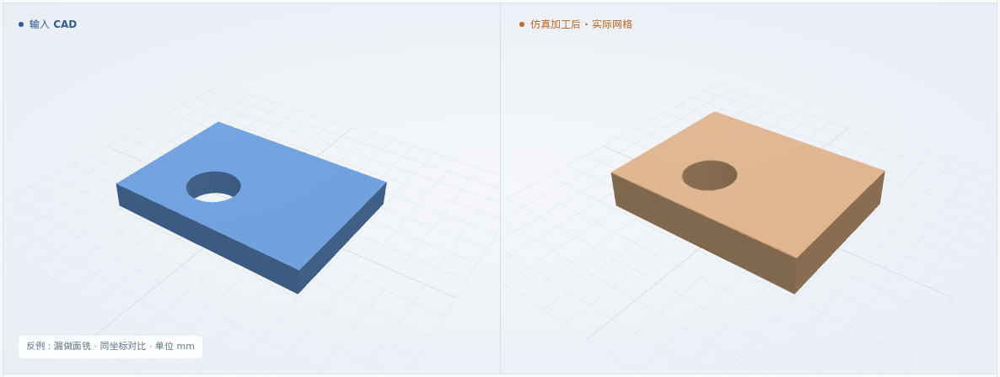
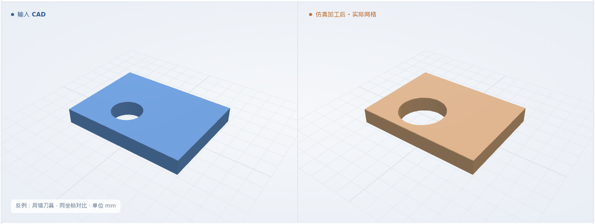
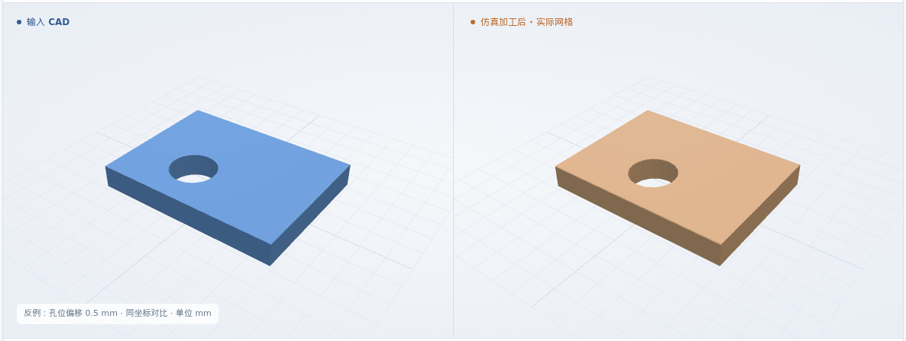
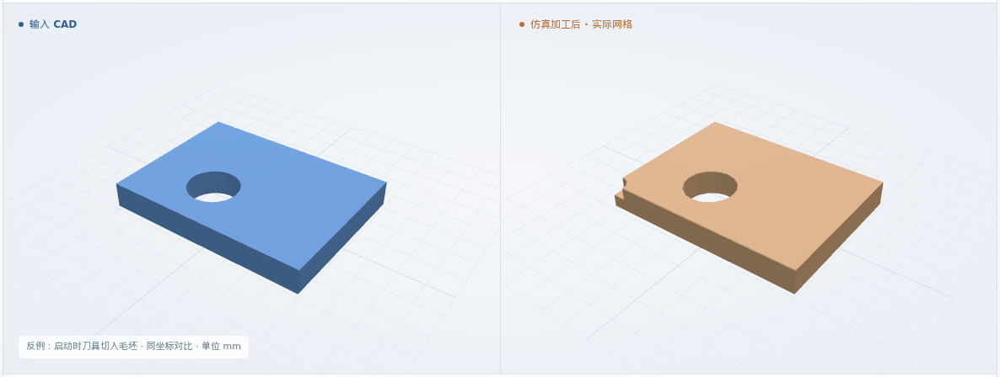

同刀：面铣后铣孔
来料厚 1.5 → 成品厚 1 mm · 目标顶面 Z-0.5 · P1 → H1
最终网格 0.025 mm
体积 IoU99.9014%
本次新增：同一 NC 连续去料 · 按卡片顺序与刀号加工 · 逐工步实际剩料验收
体积 IoU = 原 CAD 与实际剩料的交集 / 并集
来料厚 1.5 → 成品厚 1 mm · 目标顶面 Z-0.5 · P1 → H1
最终网格 0.025 mm
来料厚 1.5 → 成品厚 1 mm · 目标顶面 Z-0.5 · P1 → H2 → H1
最终网格 0.025 mm

来料厚 1.5 → 成品厚 1 mm · 目标顶面 Z-0.5 · P1 → H1
最终网格 0.025 mm

来料厚 1.5 → 成品厚 1 mm · 目标顶面 Z0.5 · P1 → H1
最终网格 0.025 mm

8 × 6 × 1.5 mm 来料 · 6061-T6 标签 · 通用 XYZ。覆盖同刀、指定孔序、换刀和 CAD 高度变化；工件 / 刀长偏置仍为零。
原始来料 → 面铣 → 检查剩料 → 铣孔 / 换刀 → 最终形状
三维回放暂不可用；上方实际图片和形状下载仍可查看。
T1 φ2 面铣至厚 1 mm，再用 T2 φ1 铣 φ2 通孔
逐项核对原卡、CAD、依赖、来料及刀号。缺项、冲突或顺序不明则停止。
准备检查通过 ↗重读原 CAD；核对面铣覆盖、孔位、螺距、退刀、工步顺序及实际换刀指令。
NC 与工艺卡一致 ↗同一块原始来料连续去料；先检查面铣剩料，再检查最终顶面、厚度、外缘及孔。几何与工序分别判定。
实际去料与几何检查 ↗代表例的面铣剩料：IoU 99.9697% · 预期 CAD · 实际形状 · 逐项验收。回放中标有“工步边界”。
最终网格 0.025 mm；尺寸允许量 0.1 mm、数值保护带 0.05 mm。25 个保留面探测点、11 个截面、每孔 9 条贯穿线。工步边界来自原生 NC 前缀，不按播放时间推断。
软件条件 ↗ · 完整结果 ↗制造验收依据仍待补齐；粗糙度、真实装夹和材料物理尚未验证。
正常入口全部拒绝；专用反例再执行实际去料。颠倒工序的最终几何仍能通过；启动状态错误则切掉毛坯角部。不能仅凭 IoU 放行。
只修改 NC；与对应正常例的原 CAD 比较 · 几何与工序均检出异常
最终网格 0.025 mm

只修改 NC；与对应正常例的原 CAD 比较 · 几何与工序均检出异常
最终网格 0.025 mm

只修改 NC；与对应正常例的原 CAD 比较 · 几何与工序均检出异常
最终网格 0.025 mm

只修改 NC；与对应正常例的原 CAD 比较 · 几何通过，工序拒绝
最终网格 0.025 mm
只修改 NC；与对应正常例的原 CAD 比较 · 几何与工序均检出异常
最终网格 0.025 mm

型腔与孔的组合、非零刀长 / 工件偏置、夹具和真实尺寸验证继续推进。S4 尚未全部完成。